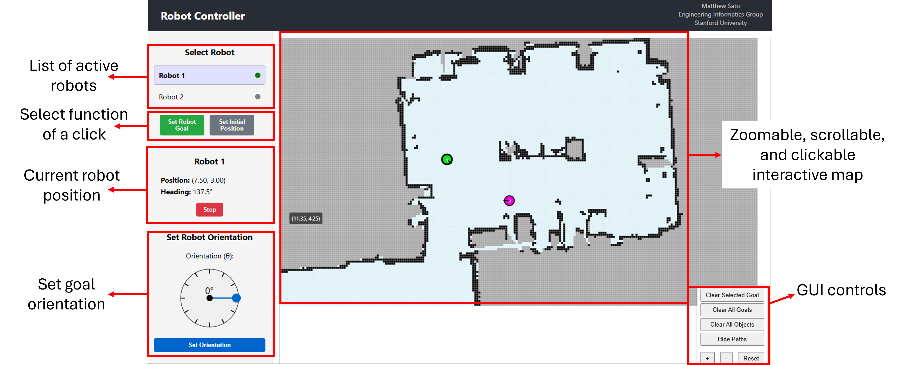

Learn to Operate the Mobile Robot
Welcome to the operation of the mobile robot! This guide assumes you have successfully completed construction and setup. Your robot should be powered on, connected to WiFi, and all systems verified.
Power on the NVIDIA Jetson and the Microcontroller.
Establish SSH connection to the robot:
Load the spidev module:
Start the ROS Container:
Open other terminals and enter the container (as needed):
Start the Gemini Container:
Open three terminals in WSL
Start the Docker containers in the first terminal
In the second terminal, start the DDS scripts:
export AGENT_ID=xxx in the ~/.bashrc file.The DDS scripts can be stopped by running . stop_scripts.sh in the third terminal.
After running these commands, the user node will be active and participate in the DDS network.
In windows command line, navigate to the GUI directory and start the server:
Now go to http://localhost:3000 in your web browser to view the GUI.
The GUI provides a web-based interface for monitoring and controlling the robots on your machine.
Click on a robot in the status panel to select it for control
Set the robot orientation when setting a goal or initial position
Selecting "Set Robot Goal" means clicking on the map will set goal position for a robot. Selection "Set Initial Position" means clicking will set the robot's starting position.
Follow these steps to control a robot with the GUI:
When a mobile robot enters the network, it will automatically appear in the Robot Status Panel on the left side of the GUI.
Select the robot from the status panel, then choose "Set Initial Position".
Adjust the orientation using the orientation slider to match the robot's approximate initial orientation.
Click on the map where the robot is currently located to set its approximate initial position.
After the robot is initialized, change the clicking function to "Set Robot Goal".
Click anywhere on the map to set a navigation goal for the robot.
The robot will plan a path and start moving toward the goal location.
There are several launch files used to support running the mobile robots.
Below is a summary of the important launch files:
Some optional arguments include:
To run any of the launch files, follow this format:
roslaunch mattbot_bringup <launch_file> [arguments:=arg_value]Start the mapping software by running the following command:
roslaunch mattbot_bringup sense_and_map.launchIn a second terminal, start robot teleoperation:
roslaunch mattbot_teleop keyboard.launchUse the keyboard controls to move the robot around and create a map of the environment. The robot should visit all areas of the space to build a comprehensive map.
Once the mapping is complete, save the map using the following command:
rosrun map_server map_saver -f <map_name> map:=/mapMy navigation software requires (and allows) for the human to modify the map. Make a copy of the map with the name <map_name>_mod.pgm. Use some image editing software (i.e., GIMP) to add barriers that you wish the mobile robot to avoid. Now, copy three (3) files to the ~/workspace/catkin_ws/src/mattbot_mcl/maps directory:
Last, create an occupancy grid for the map by running python3 ./generate_dds_map.py --map_file <map_name> within the ~/workspace/catkin_ws/src/mattbot_mcl/scripts directory.
The last thing to do is to copy the json version of the map to the user GUI directory. Copy the file: ~/workspace/catkin_ws/src/mattbot_mcl/map_json/current_map.json to your machine running the user GUI. The file should be saved in the dds_robot_platform/dds directory named as user_map.json.
To run the mobile robots, simply call the appropriate launch file:
roslaunch mattbot_bringup tall.launchThe mobile robot will connect to the DDS network, and you can control the mobile robot goals via the GUI.
To shut down the software stack, simply perform a ctrl+c command in the terminal. Alternatively, you can use the following command:
rosnode kill -aTo exit the docker containers, simply run exit in the terminal.
To shutdown the Jetson, run the following command:
sudo shutdown -h nowPlease shutdown using this command rather than simply powering off the device.